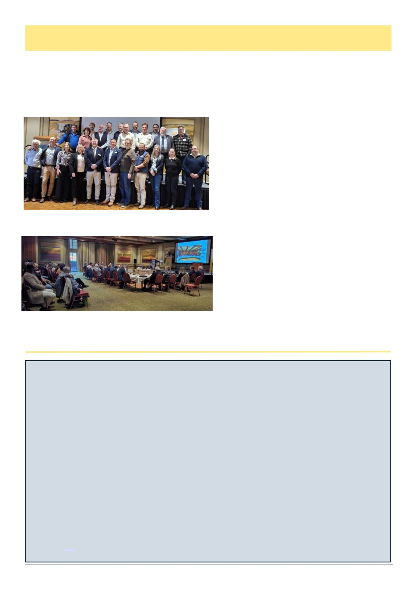

Honey bees’ sense of smell changes from larval to adult life stages, study finds
The change is thought to be the result of social evolution
UNIVERSITY OF ILLINOIS AT URBANA-CHAMPAIGN, NEWS BUREAU
Honey bee larvae lack the sophisticated olfactory capabilities of adult honey bees, a new study finds. Scientists
point to this temporary loss-of-function as a side effect of the nurse bees‘ heroic level of brood care, calling it a con-
sequence of social evolution.
The new findings are detailed in the Proceedings of the National Academy of Sciences.
Honey bees are highly eusocial, an evolutionarily advanced system in which reproduction is limited to one or a very
few individuals while nonreproductive workers care for the young. Various bee species differ in the amount of at-
tention they bestow on their young, with honey bees representing one of the most intensive levels of care.
In their short lives, most honey bees go from being helpless larvae — confined to honeycomb cells made of wax and
dependent on a horde of nurse bees for their roughly 100 daily feedings and inspections — to adults that take on the
various duties required to maintain and protect the colony, said Gene Robinson, an entomologist and the executive
director and CEO of the Discovery Partners Institute at the University of Illinois Urbana-Champaign. Robinson led
the new study with U. of I. postdoctoral researcher Tianfei Peng.
Because they are so well cared for, honey bee larvae have no need to feed themselves, unlike the larvae of many
other insect species. .. Adult honey bee foragers must be able to distinguish odors from a vast number of potential
sources of pollen and nectar. For this, they rely on a suite of chemosensory receptors, including olfactory receptors,
or ORs, and ionotropic receptors, or IRs. The new study focused on a coreceptor, ORCO, that is essential to OR
function; and IR25a, one of several coreceptors needed for proper IR function… In a series of experiments, the team
found that gene expression of ORCO in the antennae and brain was reduced in honey bee larvae compared with their
adult counterparts.
Read more here
August 2026
37
AHBIC Chair & CEO Reports, cont’d
Ben has always been a steady and reliable director of
AHBIC and has provided sound advice, strong leader-
ship and sensible decision-making across what has been
the most challenging period for the industry and
AHBIC, thank you Ben.
The 2026 AHBIC AGM delegates from across
Australia.
Our AHBIC AGM 2026 delegates at the table, and
observers at the back of the room, a great mix of
representatives from across Australia, held in
Launceston, Tasmania.
Australian Pesticides and Veterinary Medicines Au-
thority (APVMA)
AHBIC, in collaboration with the NSW Apiarists‘
Association and representatives from Amateur Bee-
keepers Australia, held a meeting with APVMA execu-
tives to discuss issues facing the industry and gain a
deeper understanding of APVMA‘s processes. The
meeting covered the current challenges with label and
permit inconsistencies and limitations, own-use per-
mits, and the costs involved in treating for varroa. We
also discussed providing beekeepers with additional
treatment options and how we can attract international
manufacturers to the Australian market.
A more detailed meeting summary will be published
[soon].
The Month Ahead
Over the next month, AHBIC will be busy produc-
ing the industry-facing summary of the roundtable and
following up on any actions agreed to in principle at the
forum. We will also hold an AHBIC Executive meet-
ing, a Producer Contingency Fund meeting and Austral-
ian Colony Loss Survey Steering Committee meetings.
We continue to press government on imported hon-
ey and, once the DWV-in-honey report is published, we
will use it to seek additional biosecurity conditions on
imported honey. A great deal of work on levy reform
has also been happening behind the scenes, with the
industry-facing campaign getting closer to launch.
A number of motions from the AHBIC AGM will
require immediate action, and we will work on these
over the coming month.
For those participating in upcoming pollination
events, I hope you travel safely, your bees are in the
condition you expect, and we all have a productive start
to the 2026-27 honey season.
(Continued from page 36)